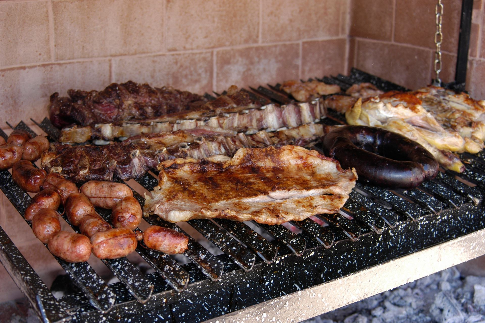

STEP-BY-STEP GUIDE TO THE PERFECT ARGENTINE ASADO

A typical Argentinan asado
The fastest way to make enemies in Argentina is to compare the asado to a barbecue. It's the same, right?
No, the locals will tell you, through gritted teeth, it is not the same. Your gas-fuelled blow-torching
of conveyor-belt beef patties has nothing in common with our sacred asado. They've got a point. Asado
is cooking in its purest form - just fire, grill and meat - so it's important that you get it right.
Otherwise, you've got yourself a barbecue.
Ingredients
- Short rib
- Flank
- Skirt
- Offal
- Sweetbreads
- Chinchulines- intestines-
- Riñones-kidneys
- Blood sausage
- Chorizo
- Provoleta (discs provolone cheese)
- Tomato
- Lettuce
- Onion
Instructions
- Start your fire. Make a stack of dry wood sitting on top of a heap of lump charcoal under the left-hand side
of your parrilla, a cast-iron grill which can be adjusted to different heights.
- If he (always he) is having problems getting his fire to light, an Argentine will throw on a few pine cones
- not briquettes, which taint the meat (and severely damage your rep as an asador).
- Once the grill has heated up, give it a vigorous clean with newspaper to remove all yesterday's carbonised
cow and arm yourself with the tools of the asador - the shovel and rake - for moving embers around.
- When the flames and smoke of your initial fire have relented, you will have a pile of smouldering charcoal
to the left of your grill, from which you rake across glowing embers to sit under the right.
- Lower the grill to 15cm above the smouldering bed of coals. Waiting in the wings are your cuts of meat, very
specific to the asado, so introduce the biggest cuts first, starting with the tira de asado (short rib).
- Allow 500g of meat per person. It sounds crazy, but the average Argentinean eats around 60kg of meat a year
and half a kilo a head works out about right.
- Keep the hottest coals aside to avoid fat dripping and flares of smoke, which spoil the flavour of the meat.
Vacio (flank) and entraña (skirt) are two other flavoursome cuts, which respond beautifully to asado
cooking.
- It's impossible to overcook beef in Argentina, as the locals like it medium to well done. If the meat is
good, they say, this is the best way to cook it: low and slow.
- The steady cooking process - fiddling is frowned upon - will give you plenty of time for the social element
of the asado, conducted over a glass of Malbec and a few picadas (cheese/ham/salami/olives on sticks).
- Next onto the parrilla are the achuras (offal). The entry-level offal is mollejas [moh-shay-has],
sweetbreads that are grilled to smokey crispness and served with a squeeze of lemon. Often these are the
only achuras served, but they can also be accompanied by chinchulines [chin-choo-leen-ez] - intestines - and riñones
[rin-yon-ez] - kidneys.
- Now it's the turn of the chorizo, morcilla (blood sausage) and provoleta (discs provolone cheese) - last in,
first onto plates.
- Once all three are crisp on the outside and oozing within, the locals usually cut them into small pieces
and serve them with slices of baguette, spread onto or sandwiched.
- Once the meat is ready, your team of sous-chefs should have finished making your salads. Of course, a true
Argentino doesn't need a side of salad to justify his meat consumption (this is, after all, the country
where vegetarians are served chicken) though an ensalada criolla - tomato, lettuce and onion dressed with
oil and white wine vinegar - cuts through the richness of the meat perfectly.
- Chimichurri, surprisingly, isn't a fixture on Argentinean tables. And if it is, it's certainly not glowing
with fresh herbs - it's based largely on dried oregano. You're likely to find (more) salt on the dinner
table, as well as some tangy salsa criolla, a fresh condiment made from red peppers, tomato, onion, parsley, oil and
vinegar.
- If you've done this right, you should be sitting down to a table groaning with meat and Malbec round about
midnight. Serve the meat in the order that it's ready.
- Enjoy 'un aplauso para el asador' when you sit down. It's no reflection on the quality of your output -
applause is granted whatever the standard of the cooking - but by this point, you've earned it.